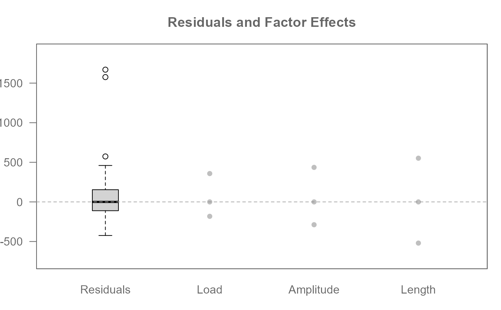
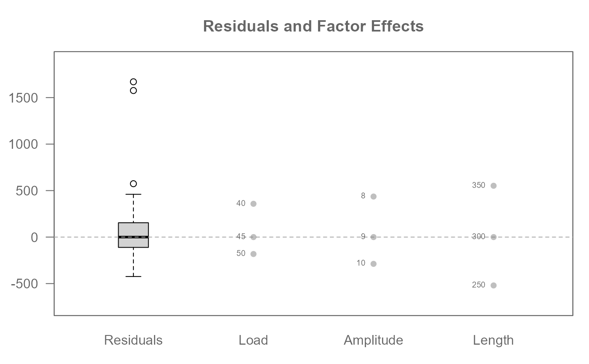
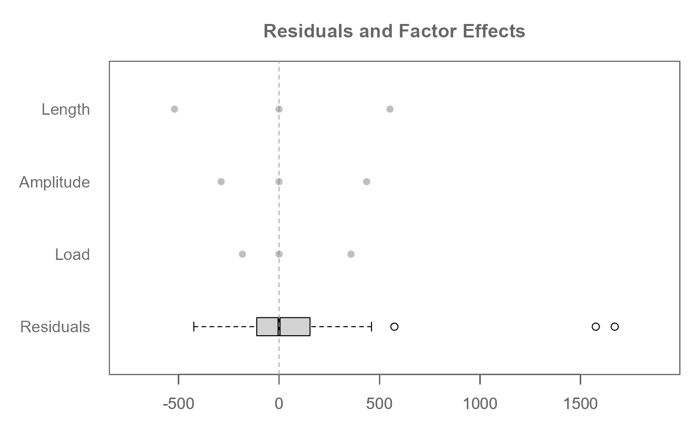
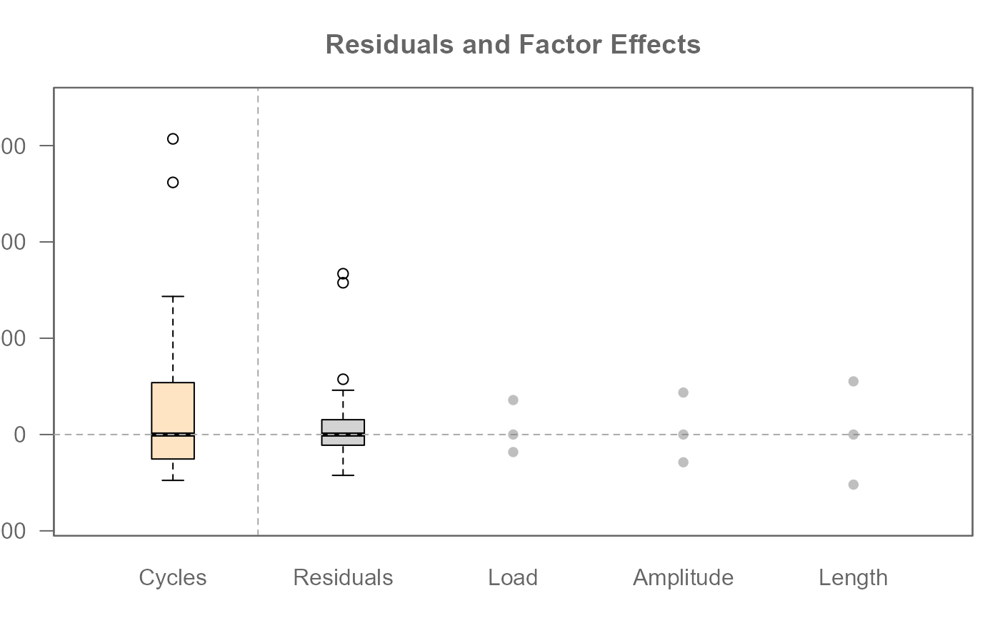
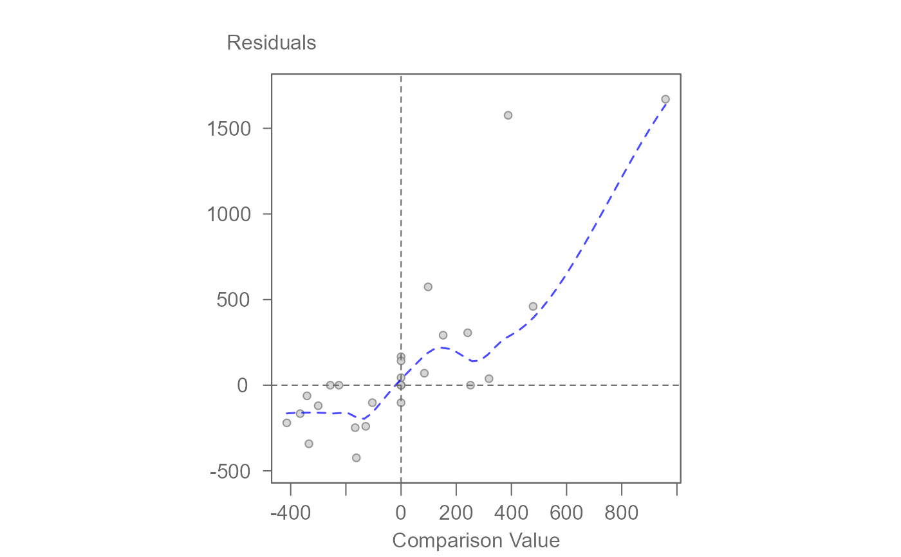
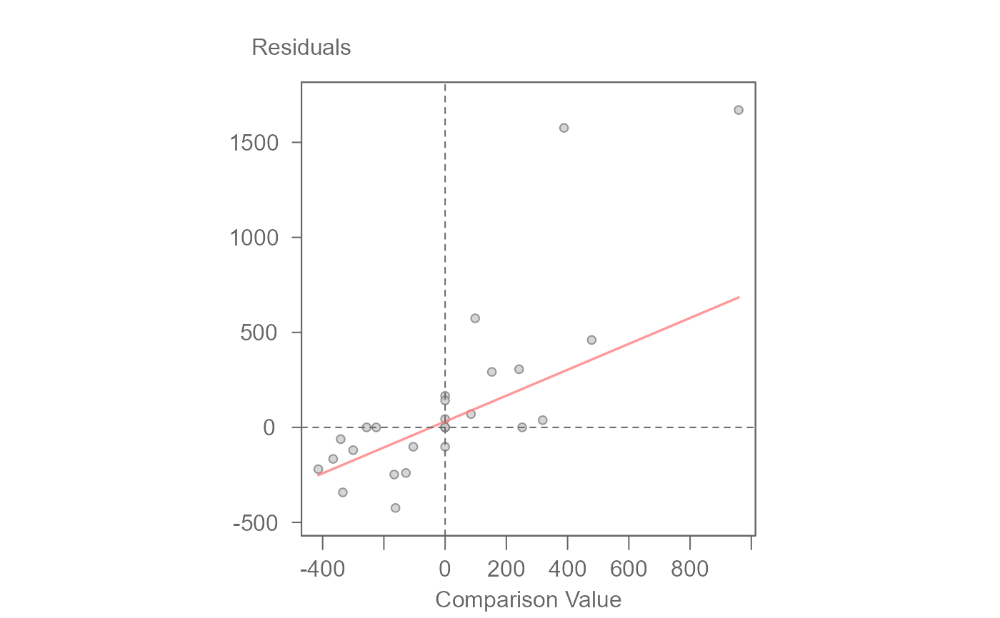

Generates either a variability decomposition plot of factor
effects or a diagnostic plot for an object of class eda_npol.
Usage
# S3 method for class 'eda_npol'
plot(x, plot = "effects", reg = FALSE, ...)Arguments
- x
An object of class
eda_npol.- plot
A character string specifying the type of plot to generate.
"effects"(default)Generates a variability decomposition plot showing residuals and factor effects.
"diagnostic"Generates a scatterplot of residuals versus comparison values (CV).
- reg
Logical. If
TRUE, fits a linear regression line to the diagnostic plot. Only used whenplot = "diagnostic". Defaults toFALSE.- ...
Additional arguments passed to internal plotting functions.
- For
plot = "effects" Arguments are passed to
.eda_plot_vardecomp. Common options include:rotate: Logical. Rotate plot orientation.show.resp: Logical. Include boxplot of the centered response.outliers: Logical. Show outliers in boxplots.label: Logical. Label individual effect levels.order: Logical. Order effects by spread.cex.txt: Numeric. Text size for labels.lim: Numeric vector. Axis limits.overlap: Character. One of"stack","overplot", or"jitter".grey: Numeric or character. Grayscale coloring.type: Character. Plot type, e.g.,"boxpnt"or"box".input: Character. Either"nway"or"reg".padding: Numeric. Padding for axis limits.
html
\item{For \code{plot = "diagnostic"}}{Arguments are passed to \code{\link{.eda_plot_xy}}. Common options include: \itemize{ \item \code{xlab}, \code{ylab}: Axis labels. \item \code{xlim}, \code{ylim}: Axis limits. \item \code{poly}: Integer. Degree of polynomial regression. \item \code{robust}: Logical. Use robust regression. \item \code{w}: Numeric vector. Weights for regression. \item \code{sd}, \code{mean.l}: Logical. Show ±1 SD and mean lines. \item \code{asp}, \code{square}: Logical. Control aspect ratio and plot shape. \item \code{grey}: Numeric. Grayscale background. \item \code{pch}, \code{p.col}, \code{p.fill}, \code{size}, \code{alpha}: Point styling. \item \code{q}, \code{inner}, \code{q.type}, \code{qcol}: Quantile box options. \item \code{loe}, \code{loe.col}, \code{loe.lw}, \code{loess.d}: Loess smoothing options. \item \code{lm.col}, \code{lm.lw}: Regression line styling. \item \code{stats}, \code{stat.size}: Display model statistics. \item \code{hline}, \code{vline}: Reference lines. \item \code{rlm.d}: List. Parameters for \code{MASS::rlm}. }} html- For
Details
This method serves as a wrapper to generate two types of plots for
eda_npol objects:
1. Variability Decomposition Plot (plot = "effects")
Calls .eda_plot_vardecomp to visualize residuals and factor
effects. Useful for assessing the relative magnitude and spread of effects
and identifying outliers.
2. Diagnostic Plot (plot = "diagnostic")
Calls
.eda_plot_xy to plot residuals against comparison values
(CV). Useful for detecting nonadditivity or model misfit. Optional
regression and smoothing lines can be added.
Examples
# Generate eda_npol object
M0 <- eda_npol(yarn, Cycles, Load, Length, Amplitude)
# Plot effects (default)
plot(M0)

# Add labels
plot(M0, label = TRUE)

# Rotate plot
plot(M0, rotate = TRUE)

# Add boxplot of centered response variable
plot(M0, show.resp = TRUE)

# Generate diagnostic plot (residuals vs CV)
plot(M0, plot = "diagnostic")

# Fit a robust regression line to diagnostic plot
# The function displays the line's slope in the console
plot(M0, plot = "diagnostic", reg = TRUE, robust = TRUE, loe = FALSE)

#> int Comparison Value^1
#> 30.7565973 0.6813374